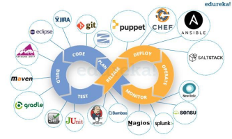

Assignments
Assignment 1
Assignment 1
Assignment 1 Submission
Assignment 2
Assignment 2
Assignment 2 Submission
00: Module introduction and setup
Introduction
Module Outline
Intro to Cloud and AWS
First lab exercises
01: Python Introduction
Python Introduction
Getting Started
Useful Data Structures
Python Tutorial Lab
Week 1 video (Thursday 17 January) - log in with a registered Google ID to view this
02: More Python & AWS
Week 2, Part 1: More Python
Functions, modules, classes
Additional topics
More Python
Week 2, Part 2: AWS EC2 & S3
Amazon EC2 and S3
EC2 and S3 lab
Week 2 video (Thursday 24 January) - log in with a registered Google ID to view this
03: Introduction to boto3
Introduction to boto3
Introducing Boto3
Week 3 video (Thursday 31 January) - log in with a registered Google ID to view this
04: What is devOps ?
Week 4, What is devOps?
What is devOps?
Remote SSH commands
Week 4 video (Thursday 7 Feb) - log in with a registered Google ID to view this
05: Automated configuration and monitoring
Week 5: Using Python and boto3 for configuration and monitoring
Developing on AWS
Monitoring cloud services
Tips for assignment 1
Monitoring Exercises
Week 5 video (Friday 15 February) - log in with a registered Google ID to view this
06: AWS Virtual Private Cloud (VPC)
Week 6: AWS Virtual Private Cloud (VPC)
AWS VPC
AWS VPC lab
AWS VPC Exercise
Week 6 video (Thursday 28 February) - log in with a registered Google ID to view this
07: Scaling and Load Balancing
Week 7: Application performance, scaling and load balancing
Performance and scaling
Lab: Auto scaling
Load balancing
Lab: Load balancing
Week 7 video (Thursday 7 March) - log in with a registered Google ID to view this
08: Assignment 1 Demos and Exercises on LB and ASG
Load Balancing and Auto Scaling Exercises
Load Balancing and Auto Scaling Exercises
09: Amazon Web Services
Week 9: Amazon Web Services; Custom CloudWatch Metrics; Assignment 2 Tips
AWS Services
AWS CloudWatch Custom Metrics lab
Assignment 2 Tips
Week 9 video (Thursday 28 March) - log in with a registered Google ID to view this
10: Cloud Security; Node app deployment
Cloud Security
Cloud Security Considerations
Load Balancer Secure Listener
Deploying a Node app on AWS
Deploying a Node app on AWS
Week 10 Video A (Security Considerations) - Thursday 4 April - log in with a registered Google ID to view this
Week 10 Video B (2 lab exercises) - Thursday 4 April - log in with a registered Google ID to view this
Developer Operations
All slides's in Module
Assignment 1
Assignment 2
Module Outline
Intro to Cloud and AWS
First lab exercises
Getting Started
Useful Data Structures
Functions, modules, classes
Additional topics
Amazon EC2 and S3
What is devOps?

Developing on AWS
Monitoring cloud services
Tips for assignment 1
Monitoring Exercises
AWS VPC
AWS VPC lab
AWS VPC Exercise
Performance and scaling
Lab: Auto scaling
Load balancing
Lab: Load balancing
Load Balancing and Auto Scaling Exercises
AWS Services
AWS CloudWatch Custom Metrics lab
Assignment 2 Tips
Cloud Security Considerations